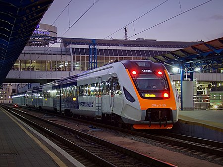

«Українська залізниця» (АТ «Укрзалізниця», Укрзалізниця) — засноване у жовтні 2015 державне акціонерне товариство залізничного транспорту загального користування, національний перевізник вантажів та пасажирів, метою діяльності якого є задоволення потреб у безпечних та якісних залізничних перевезеннях у внутрішньому та міжнародному сполученні, забезпечення ефективного функціонування та розвитку залізничного транспорту та ін. У 2018-му компанія була перетворена з публічної на приватну постановою Кабінету Міністрів України від 31 жовтня 2018 р. (№ 938).Де-факто є державним підприємством-монополістом у сфері залізничних перевезень. Компанія забезпечує майже 82 % вантажних і 36 % пасажирських перевезень, здійснюваних всіма видами транспорту. За обсягами вантажних перевезень українська залізниця займає четверте місце на Євразійському континенті, поступаючись лише залізницям Китаю, Росії та Індії. АТ «Українська залізниця» є правонаступником Державної адміністрації залізничного транспорту України, а також підвідомчих підприємств і закладів, що мали статус окремих юридичних осіб. Укрзалізниця" — акціонерне товариство, 100 % акцій якого належать державі. Компанія входить до переліку держпідприємств, які не підлягають приватизації.
| 2016 | 2017 | 2018 | |
|---|---|---|---|
| пасажирів, млн осіб | 162,3 | 158,1 | 151,1 |
| вантажів, млрд.т.км | 187,5 | 191,9 | 186,3 |